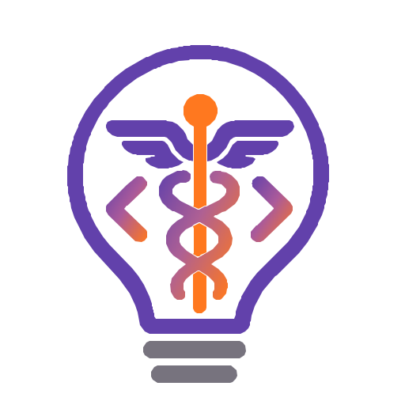

Base contábil
Bacharelado em Ciências Contábeis e vivência com conciliações, rotinas financeiras e relatórios de resultado.

cmVisão empresarial, base contábil
e criatividade para resolver.
Bacharel em Ciências Contábeis. Uno experiência tributária, desenvolvimento e BI para transformar informação em clareza para o negócio.
Conheça minha visãodef resolução(necessidade, experiência):
solução = experiência.aplicar(necessidade)
return soluçãoMinha trajetória passa pela administração, pela contabilidade e pela área tributária até agregar tudo isso ao desenvolvimento de soluções.
Sou bacharel em Ciências Contábeis e construí minha trajetória dentro da operação: administração, custos, estoques, contabilidade e tributação. Hoje, levo esse repertório para o desenvolvimento, a inteligência de negócios e a resolução de problemas.
Meu foco é abrir a “caixa preta” da informação: tornar visível o que antes era difícil de entender, com visualizações fáceis e concisas e apresentações de negócios que ajudam a enxergar o cenário e decidir.
Para mim, conhecer as regras do negócio em que se está inserido é ouro. Na era da inteligência artificial, o diferencial vai além de executar código: está em compreender o problema, questionar processos e reconhecer o que realmente faz sentido para a empresa.
Tenho mais de cinco anos de experiência em uma empresa no núcleo do comércio exterior. Nesse percurso, tive o privilégio de inaugurar o departamento de desenvolvimento a partir de um protótipo de solução que criei e que foi muito bem recebido.
Aquela iniciativa evoluiu para um sistema em produção, em operação há mais de dois anos, com um departamento dedicado à sua manutenção. Uma experiência que reúne conhecimento do negócio, iniciativa e capacidade de transformar uma ideia em uma solução que faz parte da rotina da empresa.
Entender o contexto, conectar informações e encontrar caminhos melhores. É assim que uno experiência, criatividade e inovação.
Bacharelado em Ciências Contábeis e vivência com conciliações, rotinas financeiras e relatórios de resultado.
Apuração de impostos, benefícios fiscais e regras tributárias conectados à realidade da operação.
Experiência com custos, estoques e compras para compreender processos e suas relações no negócio.
BI para transformar dados dispersos em visualizações claras, concisas e úteis à tomada de decisão.
Apresentações que organizam informações, explicam cenários e tornam o entendimento mais simples.
Desenvolvimento e inovação para resolver problemas com soluções que fazem sentido para quem usa.
Da base operacional à visão integrada de soluções: uma trajetória em que cada experiência amplia a próxima.
Leia de baixo para cimaRio de Janeiro, BrasilNegócios + contabilidade + tributação + tecnologia + BI
Reunir esse repertório para diagnosticar desafios, conectar processos e informações e propor soluções. Da informação que era “caixa preta” à visualização que esclarece; do problema de negócio a um caminho de evolução.
Vamos conversar sobre o seu desafioMake Consultores · Comércio Exterior
Desenvolvimento de sistemas internos de gestão de comércio exterior, unindo experiência contábil e conhecimento de regras de negócio para criar soluções personalizadas para a operação.
Make Consultores · Comércio Exterior
Rotinas de apuração de impostos, gestão de benefícios fiscais, configuração de regras tributárias no sistema e controle de notas fiscais recebidas e emitidas.
Massy Oficial
Conciliações de extrato, análise de contas a pagar e receber, lançamento e emissão de notas fiscais, além da geração de relatórios contábeis e de resultado.
Rio/Brasa
Gerenciamento de custos de produção e controles de estoque. Atuação também no departamento de compras, como assistente ao comprador.
Contabilidade e comunicação interpessoal.
Desenvolvimento Back-End e Front-End, com aplicação de tecnologias em negócios e nas áreas contábil e financeira.
O sistema que desenvolvi é fortemente baseado em Kanban e na metodologia Scrum, conectando a organização do trabalho à evolução contínua da solução.
Uma visão clara do andamento dos processos: organizar demandas, acompanhar etapas e tornar o fluxo de trabalho compreensível para quem participa da operação.
Foco em entrega contínua e processos dinâmicos, com comunicação próxima, planejamento e validação para ajustar a solução às necessidades do negócio e incorporar feedback a cada ciclo.
Uma conversa sobre negócios, conformidades,
normas, tecnologia e possibilidades...